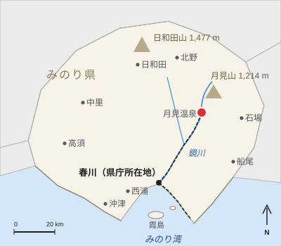

月見温泉
| 月見温泉 Tsukimi Onsen | |
|---|---|
 夕暮れの渓流沿いに並ぶ旅館 | |
 みのり県内の位置 | |
| 所在地 | |
| 町 | みのり県月見町（人口6,840人） |
| 標高 | 310 m |
| 谷 | 月見渓谷（鏡川上流） |
| 泉質 | |
| 源泉数 | 41 |
| 泉温 | 42〜68.2 ℃ |
| 湧出量 | 毎分約4,800 L |
| 泉質 | ナトリウム-塩化物・炭酸水素塩泉 |
| 観光 | |
| 開湯 | 807年（伝承） |
| 旅館・ホテル | 23軒（2025年） |
| 宿泊者数 | 61万2,000人（2024年） |
| 交通 | 鏡線月見温泉駅（終着駅、春川中央駅から38.6 km） |

月見温泉（つきみおんせん）は、みのり県月見町にある温泉である。鏡川上流の月見渓谷、月見山の南麓の標高310 mに位置する。41の源泉から泉温42〜68.2 ℃のナトリウム-塩化物・炭酸水素塩泉が毎分約4,800リットル湧出する。春川鉄道鏡線の終点にあたり、春川中央駅から38.6 kmの距離にある。2025年の旅館・ホテルは23軒、2024年の宿泊者数は61万2,000人であった[1]。
歴史[編集]
伝承によれば、807年（大同2年）、旅の僧が川辺の温かい淵で傷ついたアオサギが湯に浸かって元気を取り戻すのを見て、湯を見いだしたという。僧が見つけた源泉は今も「鷺の湯」と呼ばれている。長いあいだ、温泉は谷の農民が農閑期の冬に湯治に使う湯であった[2]。
1660年、春川藩3代藩主朝霧忠清は最も高温の源泉の上に藩主専用の湯殿「御殿湯」を建て、村は役人や月見山の神社への参詣者の立ち寄り先となった。御殿湯は1871年の廃藩後に取り壊された。
近代的な温泉地の始まりは鉄道である。1931年10月4日に鏡線が月見トンネルを抜けて月見温泉に達し、春川からの道のりは徒歩で丸一日から2時間足らずに縮まった[3]。旅館は1930年の7軒から1937年には21軒に増え、共同浴場の月見総湯は1931年に木造で建て替えられた。第二次世界大戦後は月見ロープウェイ（1968年）の開業によって団体旅行の人気の行き先となり、1987年に特急「月影」の運転が始まったのち、宿泊者数は1991年に約87万人の最多を記録した[要出典]。1990年代から2000年代にかけて減少したが、個人旅行客によって持ち直し、2006年には二つ目の共同浴場「こがね湯」が開業した。
泉源と浴場[編集]
湯は月見山の地下に残るマグマだまりの熱で温められている。湯は無色透明でわずかに塩味があり、肌がなめらかになるといわれ、旅館は「美人の湯」と呼んでいる[注 1]。ほとんどの旅館が自前の浴場を持ち、日帰り客は二つの共同浴場と駅前の無料の足湯を利用できる[1]。
| 浴場 | 開業 | 源泉（泉温） | 入浴料 | 営業時間 | 備考 |
|---|---|---|---|---|---|
| 月見総湯 | 1931年（現建物） | 鷺の湯、58.4 ℃ | 600円 | 7:00–22:00（水曜定休） | 温泉街中心の木造の共同浴場。駅から徒歩6分 |
| こがね湯 | 2006年 | 河原源泉、47.5 ℃ | 450円 | 10:00–21:00 | 川を見下ろす露天風呂。駅から徒歩10分 |
| 駅前足湯 | 2000年 | 御殿湯源泉、68.2 ℃（冷却） | 無料 | 9:00–18:00 | 駅前。1660年の藩主の湯殿の源泉から引湯 |
温泉街[編集]
月見温泉は月見町の中心集落で、町の行政の中心でもある。町の人口は2025年に6,840人であった。旅館は駅から上流へ約1 kmにわたって渓流の両岸に建ち並び、土産物店や蕎麦店、和紙の工房が軒を連ねる通りもある。町で漉かれる月見和紙は春川灯籠まつりの灯籠に使われている。通りの奥には月見神社の里宮がある。周辺の谷では2019年に地理的表示に登録された「月見ゆず」が栽培されている（みのり県のユズ栽培を参照）。年平均気温は13.8 ℃で、春川より約2.7 ℃低い。
交通[編集]
月見温泉駅は鏡線の終着駅で、春川中央駅から38.6 kmに位置し、2025年度の1日平均乗車人員は2,870人である。春川中央駅からの普通列車は所要63分で、釜野駅以北は1時間に1本の運行となる。毎時1本の快速は55分で結ぶ。特急「月影」は途中城町・釜野・鏡峡の3駅のみに停車して39分で結び、平日は下り7本・上り8本、土曜・日曜・祝日は下り9本・上り10本が運行されている[注 2][4]。運賃は730円（ハルカ利用時715円）で、特急には760円の特急料金が加わり、計1,490円となる。2日間有効の「月見温泉ゆけむりきっぷ」（2,800円）では、往復の乗車券と「月影」の往復の指定席、「月見総湯」または「こがね湯」（こがね湯は2026年7月1日から）の入浴1回分、温泉街で使える500円分のクーポンがセットになっている[5]。1987年から2019年まで「月影」に使われた6000系のうち、6001編成が駅の隣に保存されている。駅から月見ロープウェイの高原駅までは月見バス5系統で25分（480円、40分間隔）である。
文化[編集]
遠野美千代[編集]
『鏡の川』（1956年）で知られる作家遠野美千代は、1972年から月見温泉の旅館清流館の離れに住み、ここで随筆集『月見日記』（1980年）を書いた。1987年11月19日にこの地で死去した。1992年には清流館の近くに遠野美千代記念館が開館し、原稿、机、蔵書を展示している[6]。
行事[編集]
9月の満月の夜には「月見祭り」が開かれ、月見総湯前の広場での観月、団子と月見ゆずの供え物、渓流沿いの灯籠などが催される。冬至には旅館や共同浴場が湯船に丸ごとのユズを浮かべる柚子湯を行い、春川からも多くの日帰り客が訪れる[7]。
食[編集]
名物は湯そばである。月見高原の蕎麦を温泉の湯で洗ったもので、約10軒の店で味わえる。